Jonah: the lives beyond the protagonist
Actual Chrome output from the existing thirteen-scene reader. Before: ordinary export at 2de3b7d. After: opt-in human-story study. These images support composition review; no visitor response or editorial approval is claimed.
Entering the book
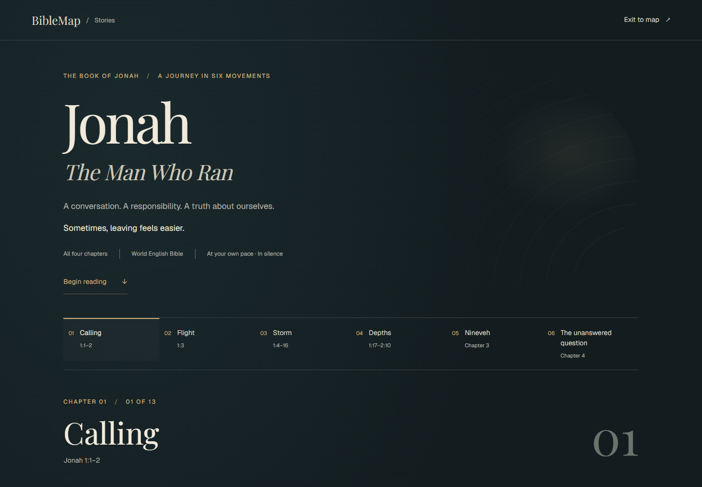
Before: motive suggested before Scripture.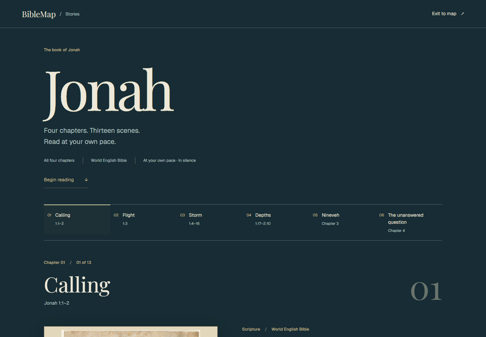
After: name, reading scope, translation, and an ordinary entrance.Nineveh, Jonah 3:5–10
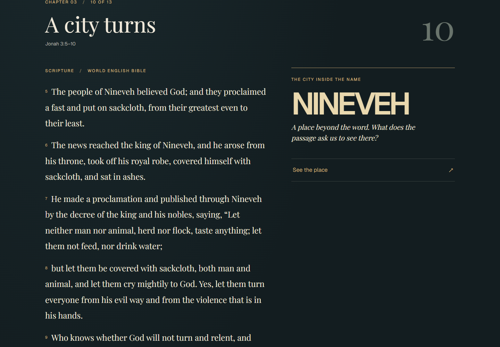
Before: the city is a name beside the passage.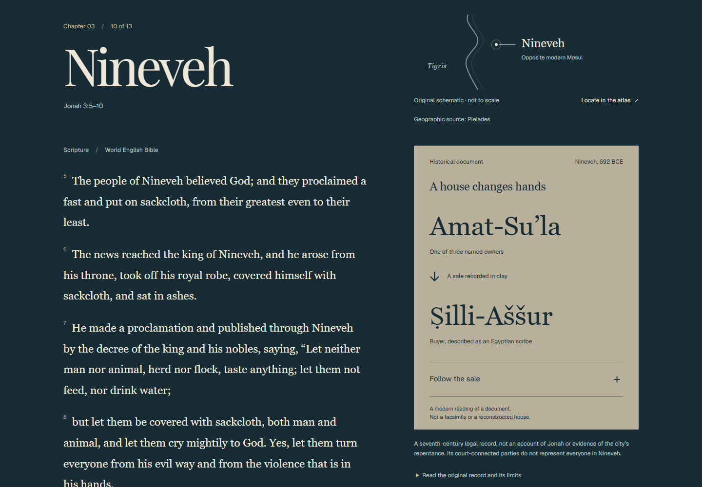
After: a particular dated document; the verse and record remain separate.The chapter turn, Jonah 4:1–4
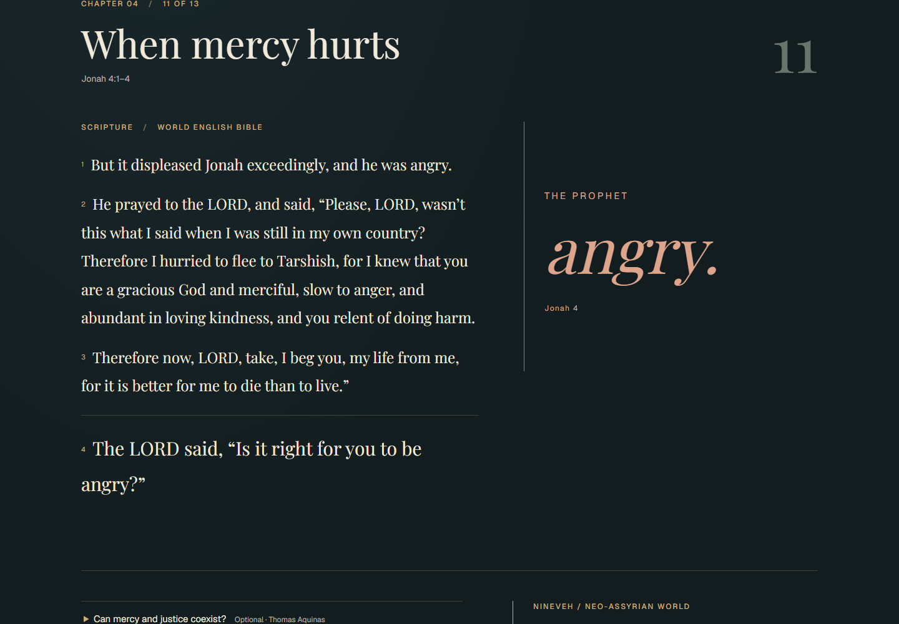
Before: interpretive title and duplicate anger lettering.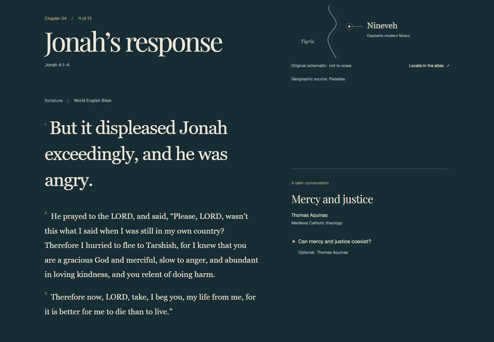
After: the text introduces the response. Retains #34’s literary direction.At 390 pixels
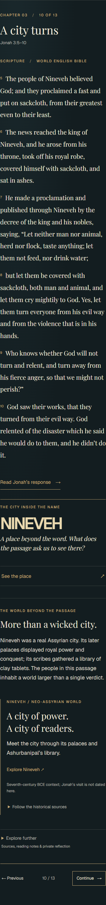
Before.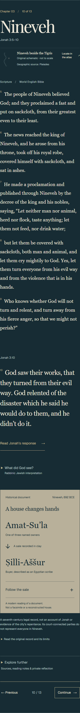
After: all Scripture before optional discovery. The longer historical interruption remains a cost.Following the document
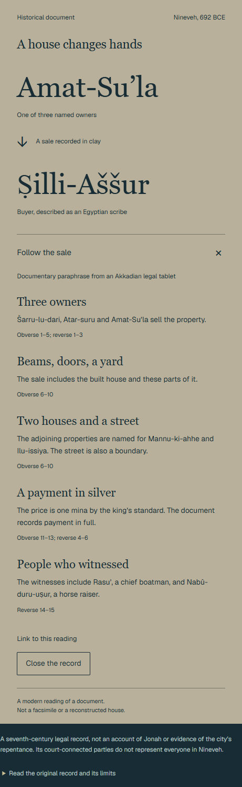
The sale is read as a modern documentary paraphrase, not a facsimile or house plan.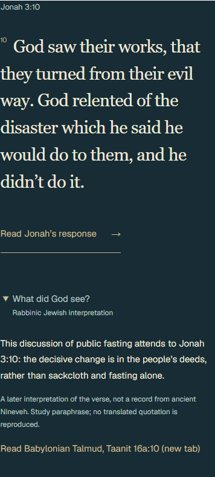
The later rabbinic interpretation is separate from both Scripture and the ancient document.The whole book was inspected
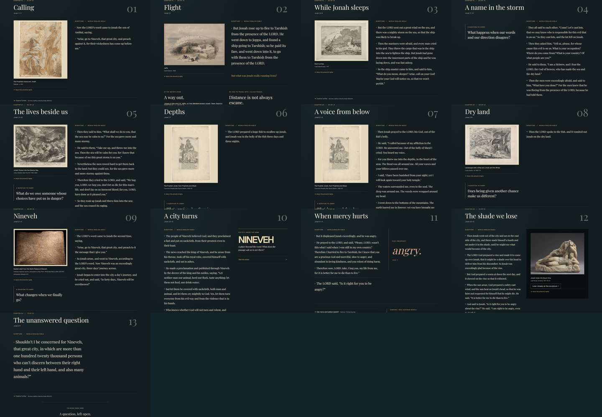
All thirteen scenes before.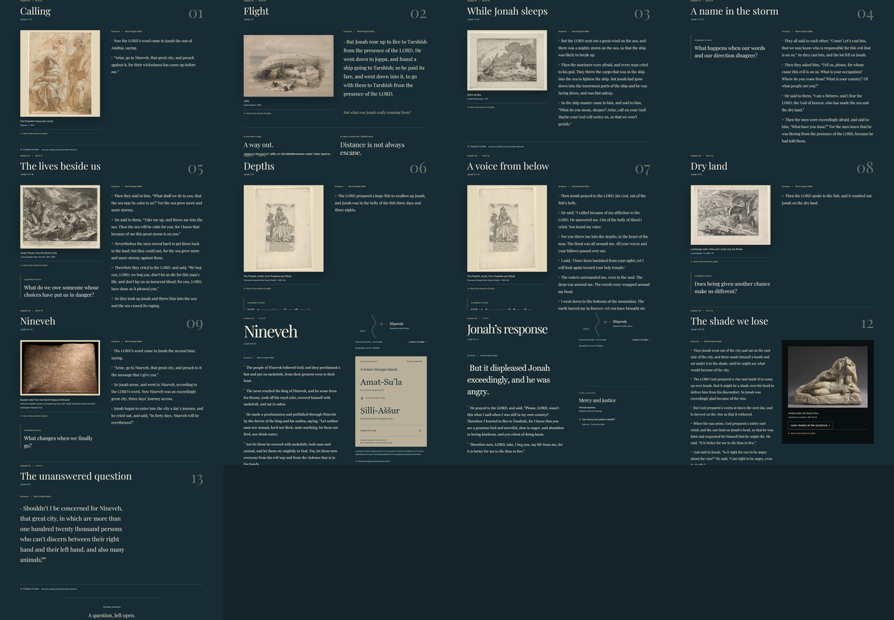
All thirteen after. Only the representative pair has a new composition.Earlier exploration and an original artwork
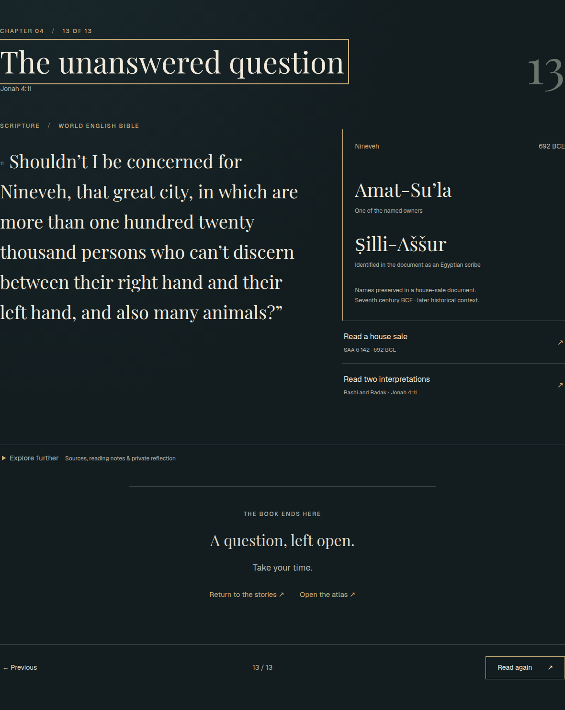
#32: documentary names at the ending. Consulted, implementation not imported.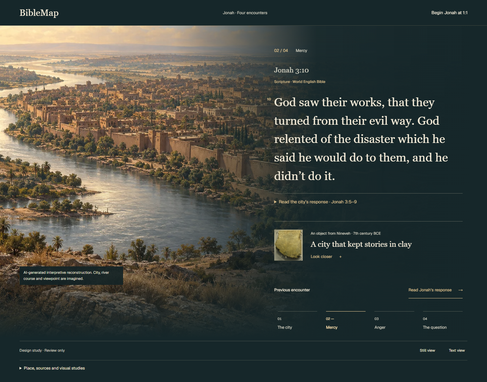
#33: continuous place, with an explicitly generated view. Not evidence of ancient appearance.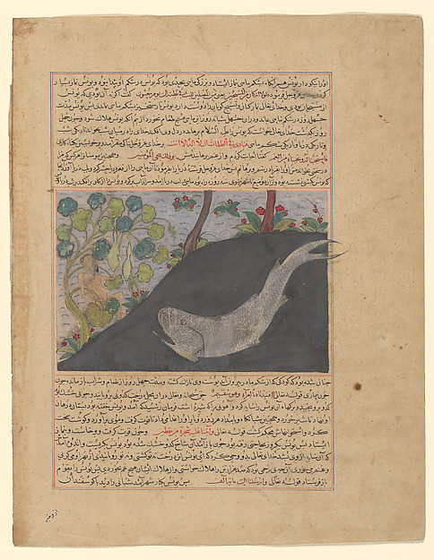
Met 57.51.37.4, c.1425, Herat. Text by Hafiz-i Abru; painter unidentified. Public domain. Object record. Research only; no new production placement.